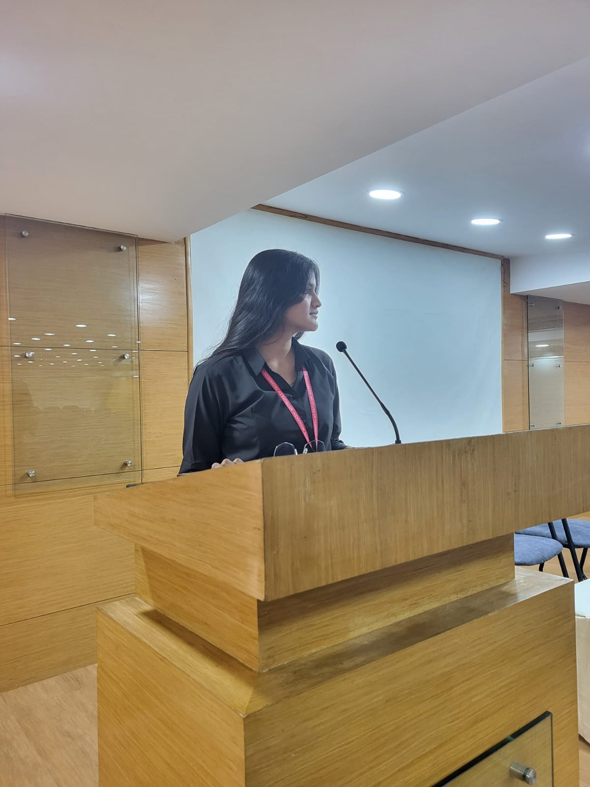

AI & Data Science
Predictive models, analytics and explainable AI that people can trust and act on.
Open to Graduate Trainee roles
AI & Data Science student from Bengaluru, working across machine learning, explainable AI, analytics and computer vision.

About me
I want to start my career as a Graduate Trainee where I can build practical AI, software and automation systems at an engineering-focused company.
Predictive models, analytics and explainable AI that people can trust and act on.
Clean, reliable end-to-end applications, from data pipelines to deployed apps.
Using intelligence and sensor data to make machines and processes smarter.
I enjoy the full path from a raw dataset to something useful: preprocessing, feature engineering, modelling, explainability and deployment. I care about honest results, like catching data leakage and choosing models for recall over headline accuracy.
Education
Nitte Meenakshi Institute of Technology (NMIT), Bengaluru
Final year. Coursework in data structures and algorithms, DBMS, operating systems and computer networks, alongside machine learning and analytics projects.
Skills
PythonCC++SQLOOP
PandasNumPyScikit-learnXGBoostStatisticsFeature engineering
SHAPK-MeansSegmentationPredictive modelling
TensorFlowKerasMobileNetV2OpenCV
MySQLStreamlitGitREST APIsExcelPower BI
DSADBMSOperating systemsNetworks
Projects
Anomaly-based monitoring with Isolation Forest to flag physiological instability across 97K+ dialysis sessions, with features reduced from 23 to 12.
PythonScikit-learnIsolation ForestPandasNumPy
Purchase prediction, K-Means segmentation and SHAP explanations in one Streamlit app. 68.35% accuracy, 0.762 ROC-AUC.
XGBoostSHAPK-MeansStreamlit
MobileNetV2 chest X-ray screening with confidence scores, recommendations and downloadable reports. Deployed the model with the lower false-negative rate.
TensorFlowKerasOpenCVStreamlit
Pipeline on about 100,000 telecom customers. Found and removed data leakage, then scored risk as high, medium or low. ROC-AUC about 0.92, churn recall 73%.
PandasScikit-learnRandom Forest
Extracted peak features from raw voltammetry curves and compared four regressors for Cd, Pb and Cu. Random Forest reached R² of 0.94 to 0.97.
Scikit-learnSciPyNumPyMatplotlib
KPI analysis of the Superstore dataset: sales, profit and orders by region, category and segment, exported as a summary report.
PythonPandasExcel
Experience
Jul to Sep 2024
Onsite
Centre for Nano and Soft Matter Sciences (CeNS), Bengaluru
Credentials
De Gruyter, 2025
Co-authored “Quantum AI for Decision Making: Enhancing Predictive Accuracy in Complex Tasks”.
Simplilearn, 2026
Completed with distinction.
NPTEL (SWAYAM), 2025
Score: 79%.
NPTEL (SWAYAM), 2025
Elite grade, score: 78%.
ACM Student Chapter, NMIT
2024 to present.
IEEE Computer Society, NMIT
2024 to 2025.
For opportunities, projects or a conversation about data and AI.